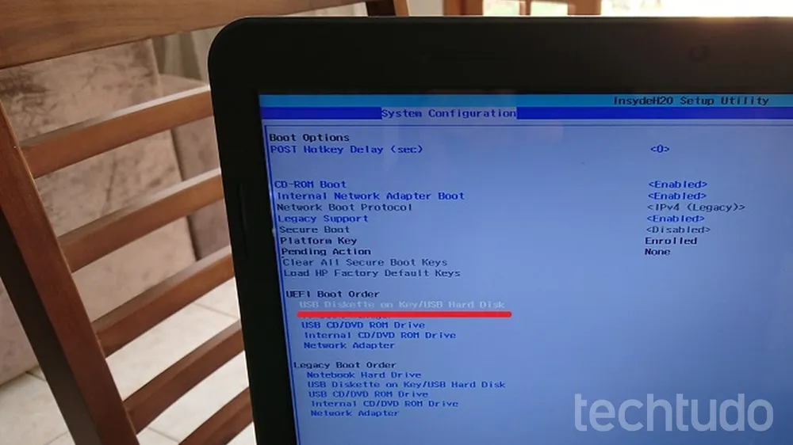

Boot é o processo que ocorre entre o momento em que um computador é ligado pelo usuário até a inicialização completa do sistema operacional, deixando a máquina pronta para uso. Em situações normais, quando há problemas de funcionamento, o processo costuma demorar apenas alguns segundos e logo libera o PC para uso.
Esse intervalo acontece porque, durante o processo de inicialização, o computador precisa concluir algumas etapas para garantir que o hardware do computador opere corretamente e que o software possa ser carregado.